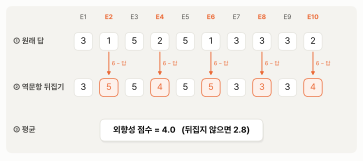
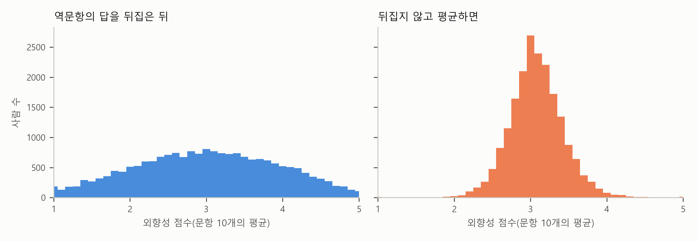

2. 문항 여러 개로 개념 하나를 — 척도와 역문항#
보고서의 신뢰도와 척도 점수 표 아래에는 이런 주가 있습니다.
주: … 역문항(예: 외향성의 “나는 말이 많지 않다”)은 6에서 답을 빼서 뒤집은 뒤 계산했다. 척도 점수는 문항 10개의 평균(1 ~ 5)
짧은 줄이지만 설문 분석의 첫 단계가 다 들어 있습니다. 외향성처럼 눈에 보이지 않는 것을 문항 10개로 측정하고, 10개의 답을 평균해 한 사람의 점수 하나를 만듭니다. 그런데 평균하기 전에 몇몇 문항은 답을 뒤집습니다. 미리 답부터 말하면, 보이지 않는 개념은 같은 것을 묻는 문항 여러 개로 측정하고, 거꾸로 묻는 문항은 답을 뒤집은 다음 평균해야 한 사람의 점수가 됩니다. 뒤집지 않으면 외향적인 사람과 내향적인 사람의 점수가 거의 같아집니다. 이 절에서는 그 생각을 시험 문제와 실력으로 먼저 세우고, 외향성 10문항의 실제 답으로 확인합니다.
시험 문제와 실력 — 보이는 것은 정답뿐#
수학 실력이 얼마나 되는지 알고 싶다고 해 봅시다. 실력은 머릿속에 있어서 눈에 보이지 않습니다. 볼 수 있는 것은 문제마다 맞혔는지 틀렸는지뿐입니다. 그래서 시험을 봅니다. 문제 하나하나의 정답 여부를 모아 점수를 내고, 그 점수로 보이지 않는 실력을 짐작합니다.
문제를 하나만 내면 어떨까요? 실력이 좋은 학생도 실수로 틀릴 수 있고, 실력이 부족한 학생도 찍어서 맞힐 수 있습니다. 문제 하나로는 실력보다 운이 더 크게 보입니다. 문제를 스무 개 내면 실수와 찍기의 운은 이 문제에서는 득이 되고 저 문제에서는 손해가 되어 서로 상쇄되고, 점수가 실력에 가까워집니다. 시험이 여러 문제로 되어 있는 까닭입니다.
성격도 같습니다. 외향성은 키나 몸무게처럼 자로, 저울로 측정할 수 있는 것이 아닙니다. 우리가 볼 수 있는 것은 “나는 먼저 말을 건다”에 4점을 줬다는 답뿐입니다. 그 4점에는 그 사람의 외향성도 들어 있지만, 문장을 어떻게 받아들였는지, 그날 기분이 어땠는지, 깊이 생각하지 않고 골랐는지도 들어 있습니다. 시험 문제 하나에 운이 들어 있는 것과 같습니다. 그래서 외향성을 묻는 문항을 10개 두고, 10개의 답을 모아 점수를 냅니다.
이렇게 직접 관측할 수 없어서 여러 문항의 답으로 측정하는 개념을 구성개념(construct)이라고 부릅니다. 외향성, 직무 만족, 브랜드 신뢰, 학업 스트레스가 모두 구성개념입니다. 같은 구성개념을 묻는 문항들의 묶음은 척도(scale)라고 부릅니다. 이 장의 자료에는 외향성 척도, 신경성 척도처럼 척도가 다섯 개 있고, 척도마다 문항이 10개입니다. 앞 절에서 본 리커트 척도라는 이름도 원래는 이런 문항 묶음을 가리켰는데, 지금은 문항 하나에 1 ~ 5로 답하게 하는 방식을 부를 때도 흔히 씁니다. 같은 낱말이 두 뜻으로 쓰이는 셈인데, 보고서에서는 “다섯 개의 성격 척도”처럼 대개 묶음의 뜻으로 나옵니다.
척도 점수 — 문항 10개의 평균#
문항 10개의 답을 모으는 가장 간단한 방법은 평균입니다. 한 사람이 10문항에 답한 숫자를 더해 10으로 나누면 그 사람의 외향성 점수가 됩니다. 이것을 척도 점수라고 부릅니다. 평균 대신 합을 쓰는 연구도 많은데, 합은 10 ~ 50, 평균은 1 ~ 5로 눈금만 다르고 사람들의 순서는 똑같습니다. 이 장의 보고서는 평균을 썼습니다. 원래 답의 눈금(1 = 동의하지 않음, 5 = 동의) 그대로 해석할 수 있어서입니다. 외향성 척도 점수의 평균 3.01은 응답자들이 외향성 문항에 평균적으로 “보통”쯤 답했다는 뜻입니다.
그런데 문항 10개를 그냥 더해도 될까요? 그러려면 10개가 정말 같은 것을 묻고 있어야 합니다. 시험으로 치면 문제 스무 개가 모두 수학 문제여야 수학 실력 점수가 됩니다. 문항이 같은 것을 묻는다면, 한 문항에 외향적으로 답한 사람은 다른 문항에도 외향적으로 답할 것입니다. 표 2-1이 그것을 확인한 것입니다. 응답자를 E1(“나는 모임의 분위기를 띄우는 사람이다”)에 준 답으로 다섯 무리로 나누고, 무리마다 E3(“나는 사람들 사이에서 편안하다”)과 E2(“나는 말이 많지 않다”)에 평균 몇 점을 줬는지 계산했습니다.
표 2-1. E1에 준 답별로 본 E3과 E2의 평균 답
E1에 준 답 |
사람 수 |
E3의 평균 답 |
E2의 평균 답 |
|---|---|---|---|
1 (동의하지 않음) |
4,679 |
2.56 |
3.51 |
2 |
4,483 |
3.15 |
3.08 |
3 |
5,497 |
3.69 |
2.53 |
4 |
3,591 |
4.09 |
2.10 |
5 (동의) |
1,468 |
4.29 |
1.87 |
주: 50문항 모두 답한 19,718명. 답은 뒤집기 전의 원래 답이다.
표에서 보듯이 E1에 높은 점수를 준 사람일수록 E3에도 높은 점수를 줬습니다. E1에 1을 준 사람들은 E3에 평균 2.56을, E1에 5를 준 사람들은 4.29를 줬습니다. 두 문항이 함께 움직입니다. 그런데 E2는 거꾸로 움직입니다. E1에 1을 준 사람들은 E2에 평균 3.51을 줬고, 5를 준 사람들은 1.87을 줬습니다. E1에서 E2로 가면 숫자가 내려갑니다.
거꾸로 묻는 문항 — 역문항#
E2가 거꾸로 움직이는 것은 E2의 문장이 거꾸로 묻기 때문입니다. “나는 말이 많지 않다”에 “동의”하는 사람은 외향적인 사람이 아니라 내향적인 사람입니다. 이처럼 척도가 측정하려는 개념과 반대 방향으로 쓰인 문항을 역문항(reverse-coded item)이라고 부릅니다. 외향성 10문항 가운데 짝수 번호 다섯 개(E2, E4, E6, E8, E10)가 역문항입니다. 보고서의 표에서 보듯이 다섯 척도에 역문항이 모두 18개 있습니다.
시험으로 치면 “옳지 않은 것을 고르시오” 문제입니다. 다른 문제는 맞는 것을 골라야 점수를 받는데 이 문제만 틀린 것을 골라야 점수를 받습니다. 채점하는 사람이 이 문제만 거꾸로 채점해야 한다는 것을 잊으면, 실력 있는 학생이 손해를 봅니다.
그래서 역문항은 평균하기 전에 답을 뒤집습니다. 5점 척도에서는 6에서 답을 빼면 됩니다. 5는 1이 되고, 4는 2가 되고, 3은 그대로 3입니다. 이렇게 하면 역문항에서도 숫자가 클수록 외향적이라는 뜻이 됩니다. 7점 척도라면 8에서 뺍니다. 눈금의 가장 큰 값에 1을 더한 수에서 빼는 것입니다. 어느 문항이 역문항이고 어떻게 뒤집는지 적어 둔 목록을 채점 키(scoring key)라고 부릅니다. 이 장의 문항은 IPIP가 공개한 채점 키를 따랐습니다.
그림 2-1은 한 응답자의 외향성 점수를 만드는 과정입니다.

그림 2-1. 한 응답자의 외향성 점수 만들기. 주황 칸이 역문항이다.
그림에서 보듯이 ①은 이 사람이 10문항에 준 원래 답입니다. E1, E3, E5 같은 정문항에는 3과 5를 줬고, E2, E6 같은 역문항에는 1을 줬습니다. “말이 많지 않다”에 전혀 동의하지 않았으니 이 사람은 말이 많은 사람입니다. ②에서 역문항 다섯 개를 6에서 빼 뒤집으면 1은 5가, 2는 4가 됩니다. 이제 10개의 숫자가 모두 같은 방향을 가리킵니다. ③에서 평균하면 이 사람의 외향성 점수는 4.0입니다. 뒤집지 않고 평균하면 2.8이 나옵니다. 외향적인 사람이 “보통보다 조금 내향적인 사람”으로 바뀌어 버립니다.
뒤집지 않으면 — 모두가 보통 사람이 된다#
한 사람만 그런 것이 아닙니다. 그림 2-2는 19,718명의 외향성 점수를 두 가지로 계산해 분포를 그린 것입니다. 왼쪽 패널은 역문항을 뒤집은 뒤의 점수이고, 오른쪽 패널은 뒤집지 않고 10문항을 그대로 평균한 점수입니다.

그림 2-2. 외향성 점수의 분포. 왼쪽은 역문항을 뒤집은 뒤, 오른쪽은 뒤집지 않고 평균한 점수다(50문항 모두 답한 19,718명).
그림에서 보듯이 왼쪽 패널의 점수는 1부터 5까지 넓게 퍼져 있습니다. 아주 내향적인 사람부터 아주 외향적인 사람까지 고루 있습니다. 오른쪽 패널의 점수는 3 근처에 좁게 몰려 있습니다. 뒤집지 않은 점수로는 열에 아홉(88%)이 2.5와 3.5 사이에 듭니다. 뒤집은 점수로는 41%입니다.
왜 이렇게 될까요? 외향적인 사람은 정문항에 높은 점수를, 역문항에 낮은 점수를 줍니다. 뒤집지 않고 평균하면 높은 점수와 낮은 점수가 서로 상쇄되어 3 근처가 됩니다. 내향적인 사람은 반대로 정문항에 낮은 점수를, 역문항에 높은 점수를 주니 역시 3 근처가 됩니다. 외향성 문항의 절반이 역문항이라, 외향적인 사람도 내향적인 사람도 모두 보통 사람이 되는 것입니다. 숫자로 보면 더 또렷합니다. 뒤집은 점수로 상위 10%인 사람들의 평균은 4.49, 하위 10%는 1.49입니다. 같은 사람들을 뒤집지 않은 점수로 보면 3.09와 2.99입니다. 3점 차이가 0.1점 차이로 줄어듭니다.
이 실수가 무서운 것은 결과만 보아서는 잘 드러나지 않는다는 점입니다. 뒤집지 않은 외향성 점수의 평균은 3.08로, 뒤집은 점수의 평균 3.01과 0.07밖에 다르지 않습니다. 표에 평균만 적혀 있으면 아무 문제가 없어 보입니다. 그 점수로 회귀분석을 하면 외향성은 무엇과도 관계가 약하게 나올 것이고, 사람들은 “외향성은 별 상관이 없다”고 결론 내릴 것입니다. 다음 절에서 볼 크론바흐 \(\alpha\)는 이 실수를 숫자로 잡아낼 수 있습니다.
💡 팁: 설문 자료를 AI에게 분석시킬 때는 채점 키를 요청문에 직접 적어 주세요. “이 설문의 리커트 문항으로 척도 점수를 만들어 줘. 역문항은 E2, E4, E6, E8, E10이고 5점 척도이니 6에서 빼서 역코딩(reverse coding)한 뒤 평균해 줘. 역코딩 전후의 문항별 평균도 보여 줘.” 채점 키를 알려 주지 않으면, AI는 문장의 뜻을 짐작해 역문항을 고르거나 아예 뒤집지 않을 수 있습니다. 어느 문항이 역문항인지는 자료의 숫자가 아니라 문장의 뜻과 척도를 만든 사람의 채점 키에서 나옵니다.
왜 거꾸로 묻나#
그렇다면 처음부터 모든 문항을 같은 방향으로 쓰면 되지 않을까요? 굳이 거꾸로 묻는 문항을 섞는 데는 까닭이 있습니다.
설문에 답하는 사람이 모두 문장을 꼼꼼히 읽지는 않습니다. 이 자료에도 외향성 10문항에 모두 같은 숫자를 고른 사람이 37명 있고, 50문항 모두 같은 숫자를 고른 사람도 26명 있습니다. 문항이 모두 정문항이라면, 10문항 모두 5를 고른 사람은 가장 외향적인 사람으로 채점됩니다. 문장을 읽지 않았을 가능성이 큰데도 말입니다. 역문항이 섞여 있으면 사정이 다릅니다. 모두 5를 고른 사람은 정문항에서 5점, 뒤집은 역문항에서 1점을 받아 평균 3.0이 됩니다. 한쪽 끝으로 잘못 채점되지 않고 가운데에 남습니다. 게다가 “말이 많은 편이다”와 “말이 많지 않다”에 모두 “동의”했다면 서로 맞지 않는 답이니, 문장을 읽지 않고 답한 사람을 가려내는 단서도 됩니다.
같은 까닭으로, 문장을 읽기는 했지만 무엇에나 조금씩 “동의” 쪽으로 답하는 버릇이 있는 사람도 있습니다. 모든 문항이 같은 방향이면 그런 사람은 실제보다 외향적으로 채점되는데, 역문항이 섞여 있으면 그 버릇이 정문항과 역문항에서 반대로 작용해 어느 정도 상쇄됩니다. 이 버릇은 이 장의 마지막 절에서 다시 만납니다.
역문항에 단점이 없는 것은 아닙니다. “나는 기분이 가라앉는 일이 드물다”처럼 거꾸로 쓴 문장은 읽다가 방향을 헷갈리기 쉽다고 흔히 말합니다. 보고서가 자기 요인과 가장 약하게 함께 움직인다고 적은 문항이 바로 이 신경성 역문항 N4입니다. 다만 그 까닭이 문장의 방향 때문인지는 이 자료로 가릴 수 없습니다.
내 설문을 분석할 때 챙길 것#
여러분이 직접 설문을 만들어 분석한다면, 척도 점수를 만들기 전에 다음을 확인해 두면 좋습니다.
척도는 되도록 이미 쓰이는 것을 가져온다. 연구에서 널리 쓰여 온 척도에는 문항, 채점 키, 신뢰도가 함께 알려져 있습니다. 이 장의 IPIP처럼 누구나 쓸 수 있게 공개된 척도도 많습니다. 가져온 척도는 출처를 밝히고, 영어 문항을 우리말로 옮겼다면 그 사실도 적습니다.
채점 키를 자료와 함께 적어 둔다. 설문지를 만들 때 어느 문항이 역문항인지 표시해 두지 않으면, 몇 달 뒤 자료를 열었을 때 문장을 다시 읽으며 짐작해야 합니다. 변수 이름 옆에 문항 문장과 역문항 여부를 적은 표(코드북)를 하나 만들어 두면 됩니다. 이 장의 자료도 원 사이트의 파일에 문항 문장을 적은 codebook.txt가 들어 있습니다.
답하지 않은 문항의 숫자를 확인한다. 이 장의 자료는 답하지 않은 문항을 0으로 적었습니다. 0을 그대로 두고 평균하면 그 사람의 점수가 낮아집니다. 이 장은 50문항 모두 답한 사람만 분석했고, 그래서 빠진 사람은 한 명입니다. 빠진 답이 많은 자료라면 어떻게 처리했는지 보고서에 밝혀야 합니다.
눈금의 끝을 확인한다. 뒤집기는 눈금의 가장 큰 값에 1을 더한 수에서 뺍니다. 5점 척도와 7점 척도가 섞인 설문이라면 문항마다 다른 수에서 빼야 합니다.
요약 — 이 절의 물음과 답
외향성처럼 보이지 않는 것을 어떻게 측정하나? 같은 것을 묻는 문항 여러 개에 답하게 하고, 그 답을 평균해 척도 점수를 만든다. 시험 문제 하나에는 운이 크지만 문제가 많으면 실력이 드러나는 것과 같다.
역문항은 왜 뒤집어야 하나? “나는 말이 많지 않다”처럼 거꾸로 묻는 문항은 숫자가 클수록 내향적이라는 뜻이다. 6에서 답을 빼 뒤집지 않고 평균하면 높은 답과 낮은 답이 상쇄되어, 외향적인 사람도 내향적인 사람도 3 근처의 보통 사람이 된다.
그렇다면 왜 거꾸로 묻는 문항을 넣나? 문장을 읽지 않고 같은 숫자만 고른 사람이나 무엇에나 “동의”하는 사람이 한쪽 끝으로 잘못 채점되지 않게 하려는 것이다.